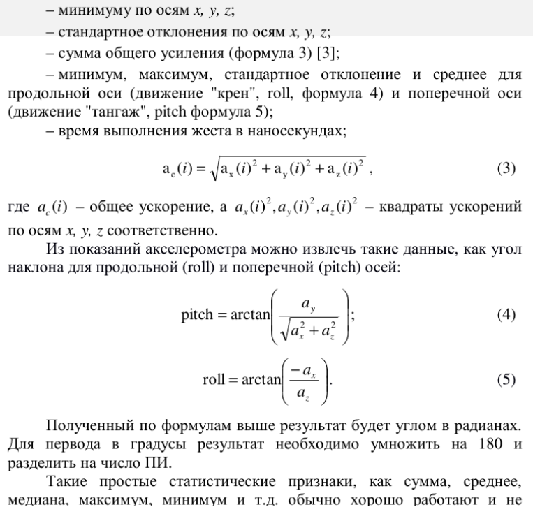
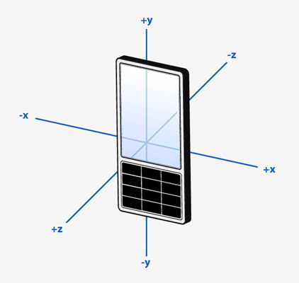

Возможно, вот так можно определять углы "крен" и "тангаж" по ускорениям с помощью акселерометра, см. формулы (4) и (5):

Следует учитывать, что ускорение по осям X и Y акселерометр дает не просто как ускорение, а как ускорение свободного падения. То есть в гризонтальном положении ax и ay равны нулю, а когда есть наклон, то по оси X и Y появляется проекция вектора ускорения свободного падения, обычно это некие доли ускорения свободного падения. При этом, чтобы была эта проекция, телефон может не двигаться с ускорением. Его просто достаточно наклонить, и удерживать под углом, и проекция ускорения свободного падения на оси X и Y будет постоянной. Поэтому в любой момент можно измерить углы наклона.
Внимание! Значения ускорений по осям могут исказиться, если телефон будет двигаться линейно с ускорением в какую-нибудь сторону. То есть, к значениям проекций ускорения свободного падения будут прибавляться и значения линейных ускорений.
На всякий случай надо сказать о принятой системе координат. Оси в Android располагаются так:

Здесь телефон стоит на торце, но если его положить плашмя, вниз будет смотреть ось -Z. Поэтому у лежащего плашмя и неподвижного телефона значение по оси Z будет выдаваться как -9.8 м/с^2.
Файл с полным текстом прикреплен.
Дополнение: Да, данный метод рабочий, углы действительно определяются правильно. Код примерно такой:
QSensorReading *sensorReading=accelerometer->reading();
qreal ax=sensorReading->property("x").value<qreal>();
qreal ay=sensorReading->property("y").value<qreal>();
qreal az=sensorReading->property("z").value<qreal>();
qreal heel=0;
if(az!=0) {
heel=ValueConvertor::angleFromRadToDeg( -atan(-ax/az) );
}
qreal different=0;
qreal sq=sqrt(ax*ax + az*az);
if(sq!=0) {
different=ValueConvertor::angleFromRadToDeg( atan(ay/sq) );
}
Heel - это крен (или Roll в терминологии статьи), Different - это дифферент (или Pitch в той же терминологии). В статье, кстати, что-то напутали: про Roll говорят что это формула 4, хотя в формуле написан Pitch, а про Pitch говорят что это формула 5, хотя там написан Roll. Что имели в виду авторы не совсем понятно, поэтому лучше ориентироваться на код, приведенный выше, он как минимум, выдает правильные значения.